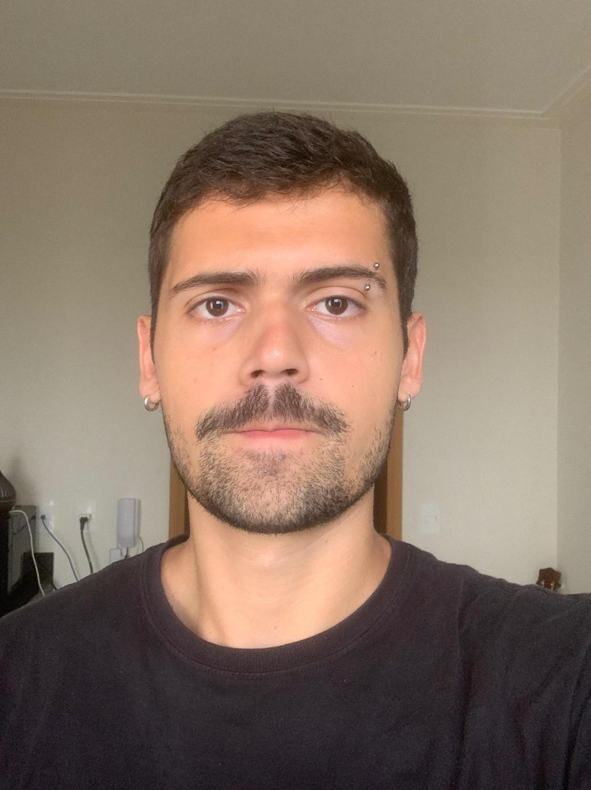

Auxiliar de Contabilidade — INOVEI CONTABILIDADE
07/2020 a 03/2022
- Responsável pela parte Fiscal e aberturas de ME e MEI
- Colaboração na área de Departamento Pessoal
- Realização de conciliação bancária

Auxiliar de Escritório
Disponível TI / Contabilidade
Busco oportunidades na área de TI e escritórios de contabilidade onde já possuo experiência para aplicar minhas habilidades técnicas e me desenvolver profissionalmente.
Comecei a trabalhar com 17 anos em um escritório de contabilidade, onde aprendi toda a rotina de um escritório contábil. Estou cursando Engenharia de Software na UTFPR – Campus Cornélio Procópio e busco ingressar na área de TI para agregar mais conhecimento à minha formação.

07/2020 a 03/2022
06/2023 a 08/2023